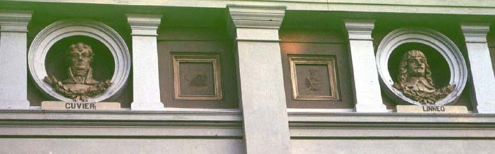

|
|  |
|
F. Heynemann & H. Aberg, Façade of the La Plata Museum
, 1884-88
|
In the early days of the 1880s, the monumental expression of this new image of a territory now indisputably under the control of the central state were the temples of the natural sciences entrusted with the task of collecting and exhibiting the material evidence of this secular conquest. The splendid, neoclassical Museum of La Plata, constructed between 1884 and 1888, with its homages to a pantheon of naturalist sages of whom the Argentinian young explorers of the 1880s would be worthy descendants, was perhaps the most radical attempt to construct a new monumental narrative of the state that bypassed national history by way of a millenial tale of natural evolution, suggesting that a vast and rich portion of the earth lay now open to those who dared to take on its challenge.
|